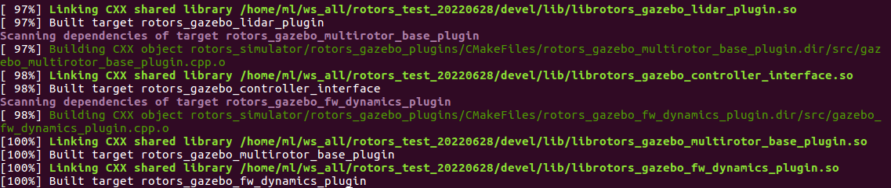
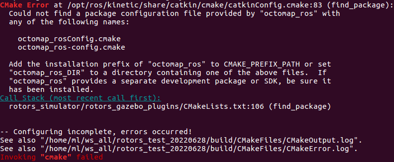
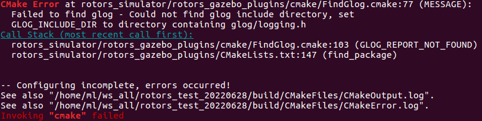
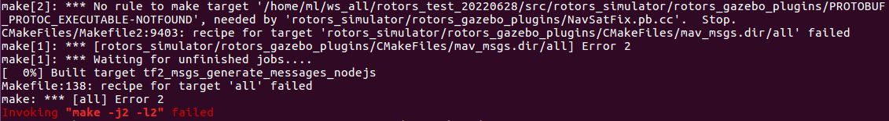
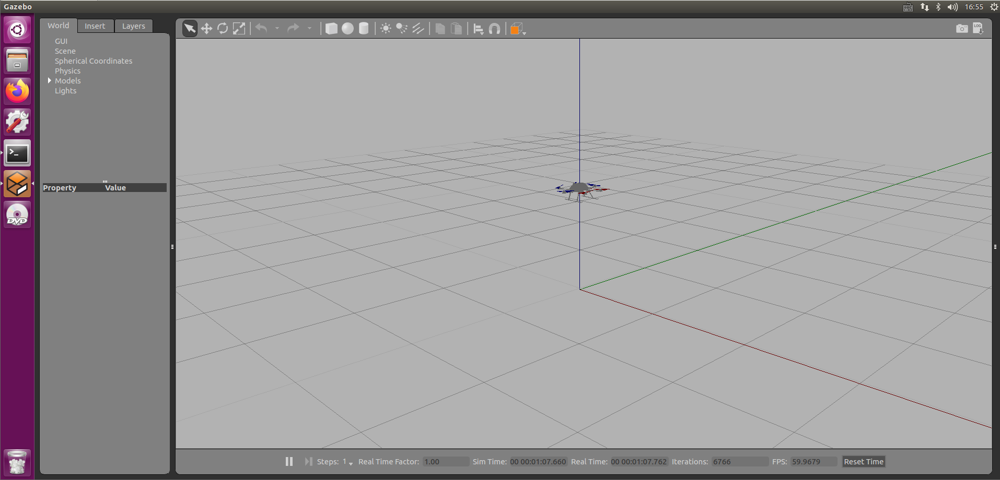
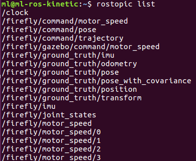
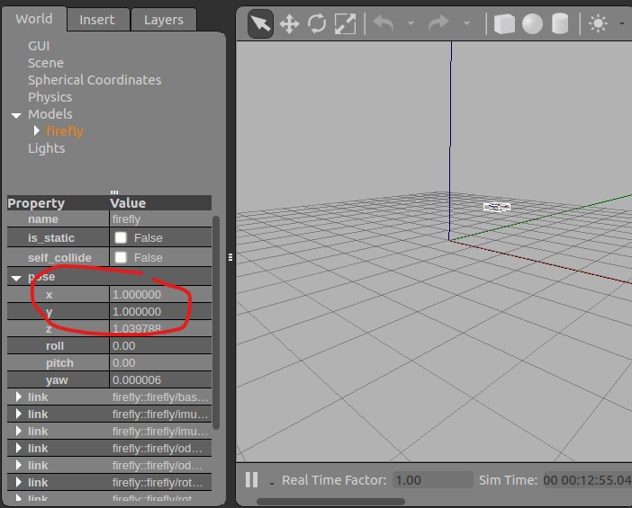

rotors_simulator（无人机ROS仿真包）
前言
RotorS is a MAV gazebo simulator. It provides some multirotor models such as the AscTec Hummingbird, the AscTec Pelican, or the AscTec Firefly, but the simulator is not limited for the use with these multicopters.
There are simulated sensors coming with the simulator such as an IMU, a generic odometry sensor, and the VI-Sensor, which can be mounted on the multirotor.
This package also contains some example controllers, basic worlds, a joystick interface, and example launch files.
Below we provide the instructions necessary for getting started. See RotorS' wiki for more instructions and examples (https://github.com/ethz-asl/rotors_simulator/wiki).
Github链接 ： ethz-asl/rotors_simulator: RotorS is a UAV gazebo simulator (github.com)
安装及测试
1 依赖工具 wstool
sudo apt install python3-wstool -y
2 创建工作空间和工程
mkdir -p ~/WORKSPACE_NAME/src
cd ~/WORKSPACE_NAME/src
catkin_init_workspace # initialize your catkin workspace
wstool init
3 获取simulator和其他依赖
cd ~/catkin_ws/src
git clone git@github.com:ethz-asl/rotors_simulator.git
git clone git@github.com:ethz-asl/mav_comm.git
4 编译
切换到工作目录下，catkin_make

编译过程错误及解决
每次出错最好将devel和build两个目录都删除，在重新catkin_make
Error 1
错误描述

原因及解决方案
错误提示说明缺少依赖包octomap_ros，XXX_XXXConfig.cmake为错误提示内容组成，包名即XXX_XXX，eg : octomap_rosConfig.cmake的包名为octomap_ros。而在shell命令中，需要在前面加上 ros-kinetic （ros-安装的ros版本），然后用连字符 - 替换下划线 _ ，即 ros-kinetic-octomap-ros,安装完成即可：
sudo apt-get install ros-kinetic-octomap-ros -y
Error 2
错误描述
CMake Error at rotors_simulator/rotors_gazebo_plugins/cmake/FindGlog.cmake:77 (MESSAGE):
Failed to find glog - Could not find glog include directory, set
GLOG_INCLUDE_DIR to directory containing glog/logging.h

解决方案
sudo apt-get install libgoogle-glog-dev -y
Error 3
错误描述
No rule to make target '/home/ml/ws_all/rotors_test_20220628/src/rotors_simulator/rotors_gazebo_plugins/PROTOBUF_PROTOC_EXECUTABLE-NOTFOUND', needed by 'rotors_simulator/rotors_gazebo_plugins/NavSatFix.pb.cc'. Stop.

原因及解决
缺少protobuf-compiler编译器，使用如下命令安装即可
sudo apt-get install protobuf-compiler
5 测试
输入以下命令，打开gazebo加载模型和世界：
有一些基本的启动文件，可以加载带有其他传感器的不同多旋翼飞行器。在
WORKSPACE_PATH/src/rotors_simulator/rotors_gazebo/launch中找到。可以修改
world_name后的参数加载新场景，可以在WORKSPACE_PATH/src/rotors_simulator/rotors_gazebo/worlds下找到其他的场景；
There are some basic launch files where you can load the different multicopters with additional sensors. They can all be found in
~/catkin_ws/src/rotors_simulator/rotors_gazebo/launch.The
world_nameargument looks for a .world file with a corresponding name in~/catkin_ws/src/rotors_simulator/rotors_gazebo/worlds. By default, all launch files, with the exception of those that have the world name explicitly included in the file name, use the empty world described inbasic.world.
cd YOUR_PATH/WORKERSPACE_NAME/
source devel/setup.bash
roslaunch rotors_gazebo mav_hovering_example.launch mav_name:=firefly world_name:=basic
运行事件
The simulator starts by default in paused mode. To start it you can either
- use the Gazebo GUI and press the play button
- or you can send the following service call.
rosservice call gazebo/unpause_physics
运行结果如下：

使用rostopic查看当前发布的话题：
rostopic list

其中/firefly/command/pose为无人机位置信息话题，可以通过rostopic pub 话题名 消息类型 消息内容，发布新消息，以控制无人机移动：
rostopic pub -1 /firefly/command/pose geometry_msgs/PoseStamped "header: seq: 0 stamp: secs: 0 nsecs: 0 frame_id: ''pose: position: x: 1.0 y: 1.0 z: 1.0 orientation: x: 0.0 y: 0.0 z: 0.0 w: 0.0"
这表明设置的新位置为 (1.0, 1.0, 1.0)，-1表示发布一次消息后退出。

其他注意事项
虽然场景可以启动，但可能仍有依赖未安装，如源代码中python用到的一些三方库。